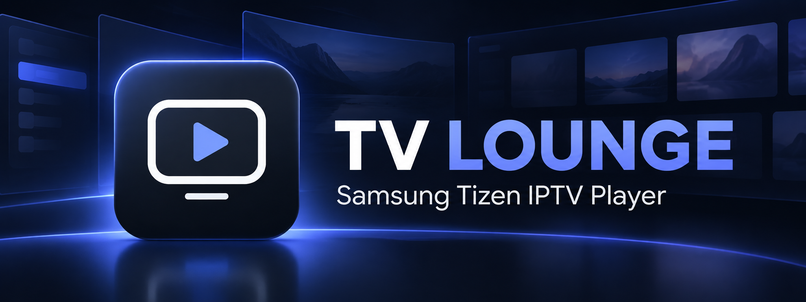
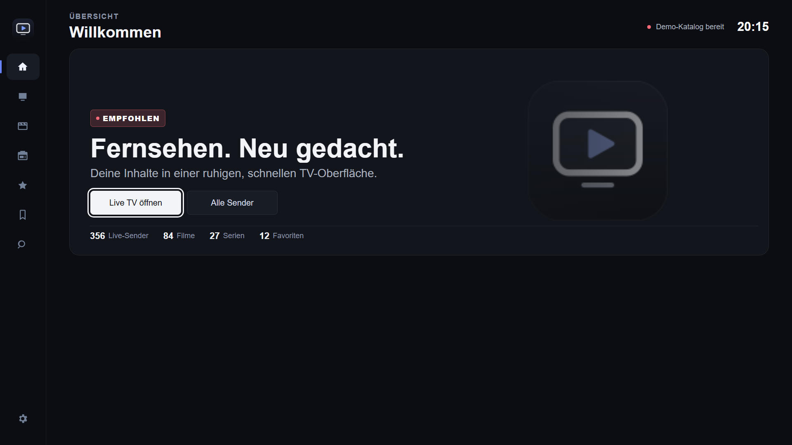
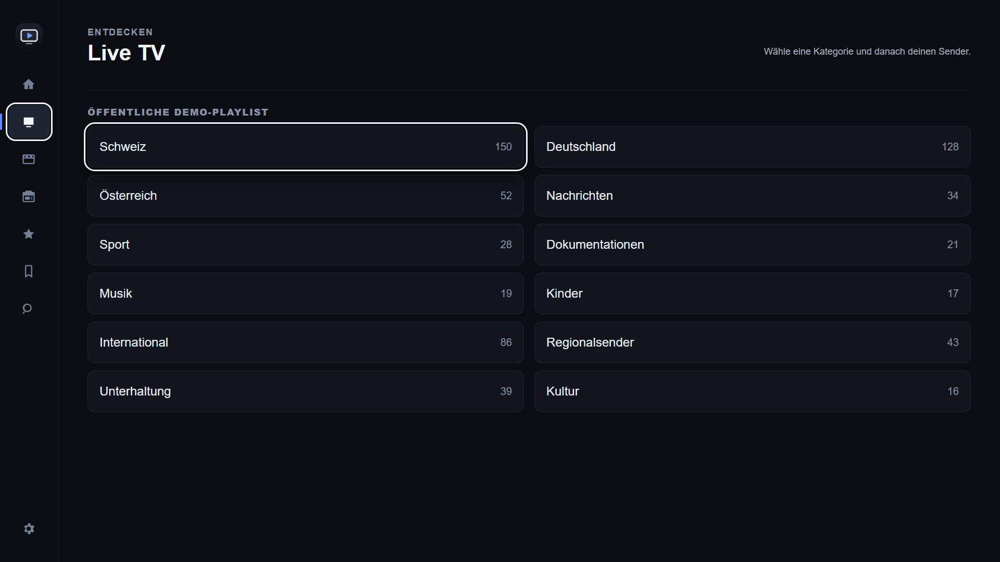
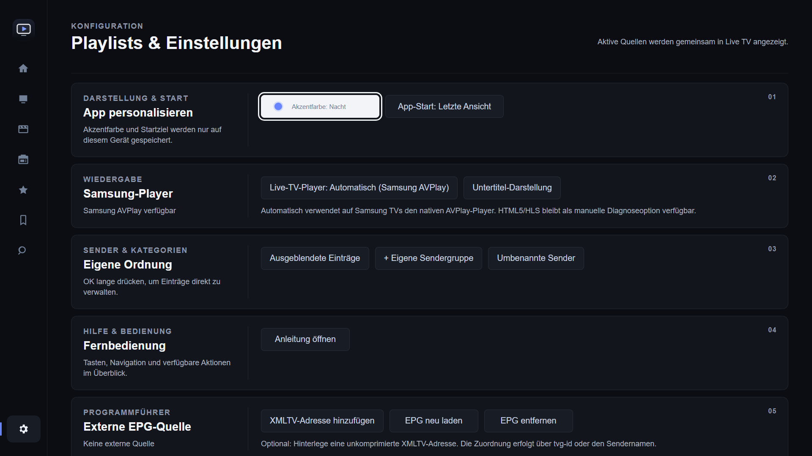
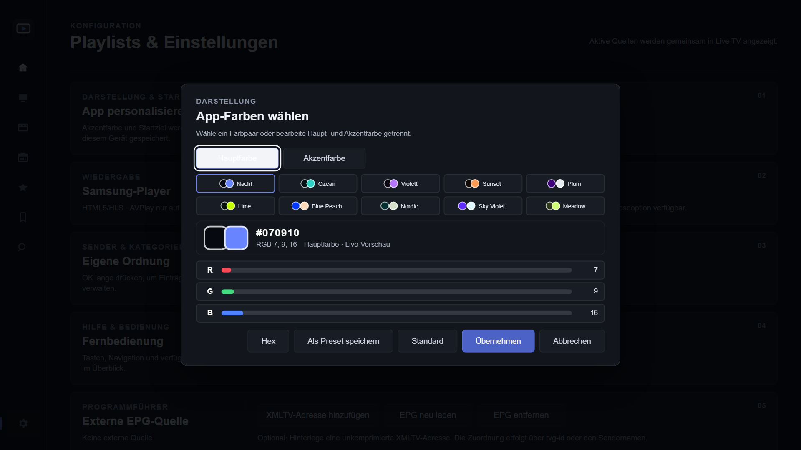

Live TV, movies & series
Browse your compatible playlists in dedicated sections with easy remote navigation.
Your viewing experience, your way
Discover a clean, remote-friendly home for your own compatible live TV, movie and series playlists — all in one place.
TV Lounge is not yet available in the Samsung TV app store. No channels, movies, series or subscriptions are included.

Built for the big screen
Find, organize and enjoy content from sources you choose, with a TV-first interface.
Browse your compatible playlists in dedicated sections with easy remote navigation.
Keep your favorite channels and on-demand titles within easy reach.
Resume supported movies and episodes from where you left off.
Check now-and-next schedule details and connect an optional XMLTV program guide.
Search your library and personalize channel categories and ordering.
Customize the interface with accent colors and personal theme presets.
A closer look
Actual TV Lounge application screenshots, captured in its PC preview with a public demo catalogue.




On the way to Samsung TVs
TV Lounge is preparing for its Samsung Smart TV store release. Availability and compatible devices will be announced once confirmed.
TV Lounge does not sell, bundle or supply channels, films, series, playlists or subscriptions.
Playlist details, settings, favorites and playback progress are stored locally on your television.
Your TV connects directly to the playlist and streaming servers you select; TV Lounge has no intermediary content server.
Help & feedback
When reporting a problem, include your Samsung TV model and model year, app version, steps to reproduce and the exact error. Never share playlist URLs, passwords, access tokens or other credentials publicly.
Informationen auf Deutsch
TV Lounge ist ein Player für eigene, kompatible Playlists auf Samsung Smart TVs. Die App stellt keine Sender, Filme, Serien oder Abonnements bereit. Einstellungen und Wiedergabestände werden lokal auf dem Fernseher gespeichert. TV Lounge befindet sich noch in Vorbereitung für die Veröffentlichung im Samsung Tizen Store.
Deutsche Datenschutzerklärung ↗